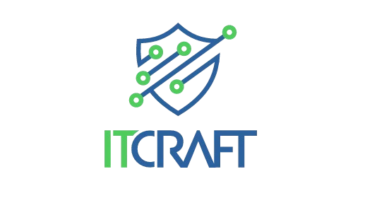

OUR MISSION
Start with
10,000 SMEs.
Assess, design, guide, implement, secure and manage their IT ecosystems as the first step towards wider impact.

Let’s talk ↗We’re building a more resilient IT ecosystem for India’s SMEs—where better infrastructure supports stronger businesses.
ITCraft stands at the intersection of technology and entrepreneurship. We help businesses improve continuity, efficiency and security by connecting infrastructure assessment, implementation and ongoing management.
Built on IITPL’s 20+ years of experience, our approach combines technical expertise with an understanding of the realities of growing businesses.
Through our Authorised Tech Partner network, we aim to bring this support to Tier 1, Tier 2 and Tier 3 cities across India.
Assess, design, guide, implement, secure and manage their IT ecosystems as the first step towards wider impact.
Build business continuity and efficiency through scalable technology, committed local partners and long-term support.
Two decades in IT infrastructure and digital transformation, aligning technology strategy with business growth, productivity and cost efficiency.
An entrepreneurial background spanning education, cloud kitchens and QSRs, bringing business operations, team leadership and a focus on growth.
A Coventry University postgraduate with experience in technology analysis, system optimisation and cybersecurity, focused on secure digital ecosystems.
Leads technical operations, infrastructure optimisation and digital transformation to align secure, efficient IT with organisational goals.
15+ years of experience connecting IT capabilities with business growth. Builds the partner ecosystem and helps turn hidden IT risks into actionable opportunities.
Builds strategic relationships that connect founders and business owners with opportunities to expand their networks and grow.
Start with a free 30-minute discovery conversation.